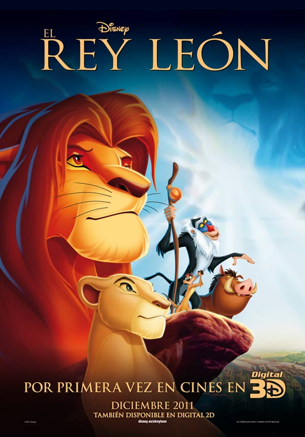
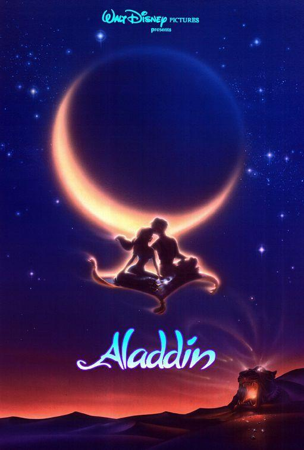
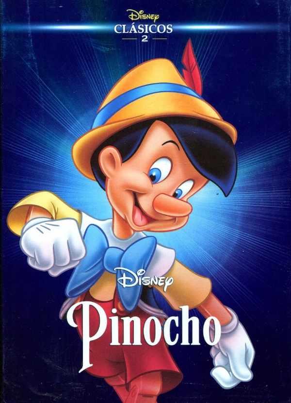
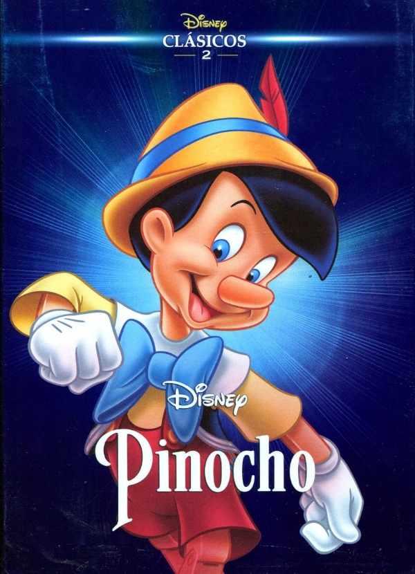
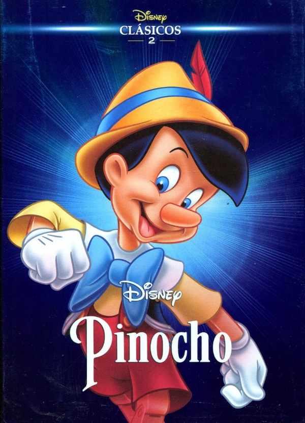

INFALTABLES
Todos hemos crecido inmersos en el mundo mágico de la factoría de Mickey Mouse y por eso su cine es tan especial. Sus historias están cargadas de emoción y nos permiten, muchas de ellas, acercarnos a aquellos niños que fuimos algún día.
Mirá más


 

